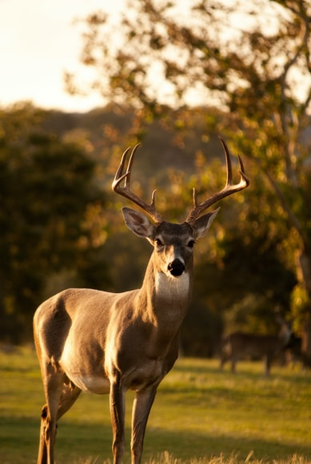
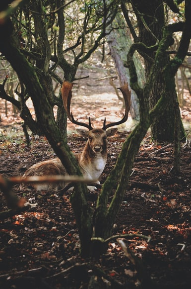

Cervo do Pantanal
Da família Blastocerus dichotomusÉ um mamífero ruminante e único representanto do gênero Blastocerus. Habituado nas várzeas e rios do centro da América do Sul, desde o sul do Rio Amazonas até o norte da Argetina.
Essa espécie, atualmente, só é comum no Pantanal, na Bacia do Rio Guaporé, na Ilha do Bananal e em Esteros Del Iberá.
Maior cervídeo da América do Sul, pesando até 125 quilos e medindo 1,27m, os machos são maiores que as fêmeas e possuem chifres ramificados.
Animal diurno e solitário, sendo seus predadores a onça-pintada e a onça-parda. Sua alimentação constituí-se basicamente de plantas aquáticas.
“Penso que um cervo com coragem de enfrentar um leão é mais "respeitado" do que um exército inteiro de leões. Não adianta ser digno de temor se não és digno de respeito, e coragem é uma das mais belas virtudes de quem exerce o respeiro.”
- Surgiu: 12.000 anos
- Tipo: Mamífero
- Idade média: 13 anos
- Macho adulto: 80Kg
- Fêmea adulta: 55Kg
- Família: Lupus
Normalmente, vive em áreas pantanosas e em savanas sazonalmente inundadas. Fogem das cheias dos pântanos e ficam próximos à rios e áreas alagadas.
A caça e a perda de habitat são os principais causadores das mortes desses animais. Construção de barragens também contribui para seu desaparecimento, uma vez que, elimina a área de várzea.